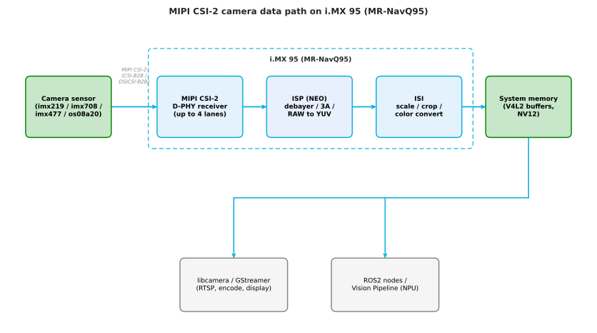
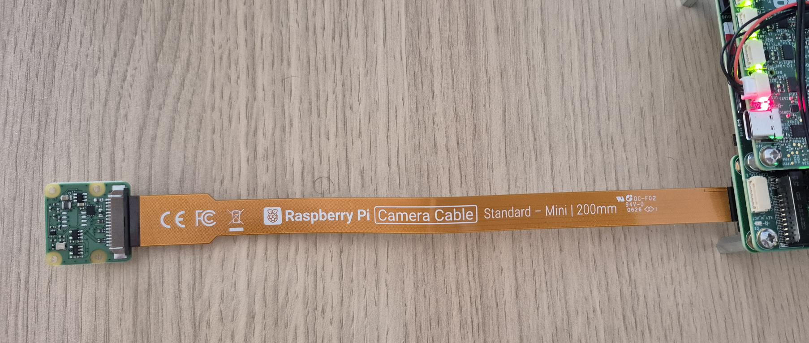
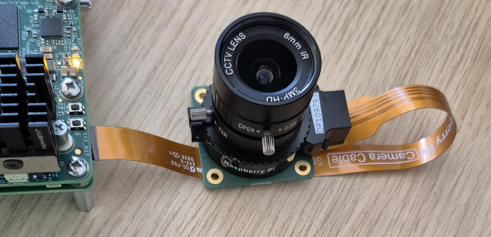
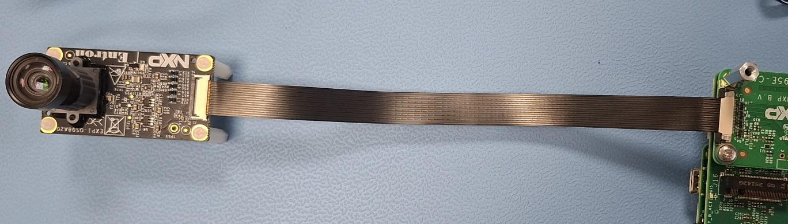
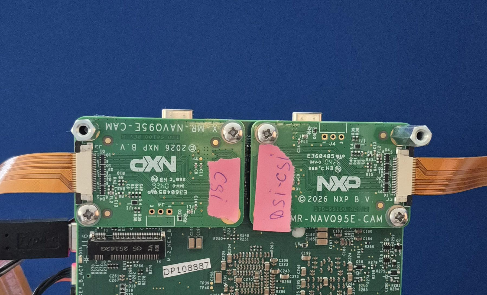

MIPI CSI-2 Camera Application Note¶
Introduction¶
This application note describes the MIPI CSI-2 camera subsystem of the MR-NavQ95 vehicle computer (based on the NXP i.MX 95 applications processor) and shows how to bring up, capture from, and stream a camera on the board. It covers the camera data path, the supported sensors, the physical connection, the device-tree overlay selection performed in U-Boot, and the capture / streaming software on the Linux (Cortex-A55) side.
It is intended for engineers integrating a camera into a robotics application on MR-NavQ95, whether the frames are consumed for streaming, for display, or as an input to on-device inference.
Camera subsystem architecture¶
On i.MX 95, image data flows from the sensor through the MIPI CSI-2 receiver, is processed by the on-chip Image Signal Processor (ISP, the “NEO” pipeline), scaled/converted by the Image Sensing Interface (ISI), and written to system memory as V4L2 buffers. From memory the frames are consumed by libcamera / GStreamer (for streaming, encode or display) or by robotics software such as a ROS2 node or the Vision Pipeline feeding the Neutron NPU.


Key i.MX 95 camera capabilities relevant to MR-NavQ95:
2× MIPI CSI-2 4-lane receivers — one of them is muxed with the MIPI-DSI display interface. On MR-NavQ95 these are exposed on the CSI-B2B and DSICSI-B2B connectors.
On-chip ISP (NEO) — Bayer debayering, auto-exposure / auto-white-balance / auto-focus, and RAW→YUV conversion at up to ~500 Mpx/s.
ISI — hardware scale, crop and color-space conversion; produces NV12 (and other) formats for downstream use.
Up to 8 concurrent streams via CSI-2 virtual channels.
Supported sensors¶
Sensor |
Module |
Adapter |
dtbo |
|---|---|---|---|
imx219 |
RPi Camera Module 2 |
22→15-pin |
|
imx708 |
RPi Camera Module 3 |
22→15-pin |
|
imx477 |
RPi HQ Camera (lens req.) |
22→15-pin |
|
os08a20 |
EXPI-os08a20 |
none (22-pin direct) |
|
Note: P/N MR-RPICAM3 is available as an accessory from NXP.com. This is also readily available online from other sources of Raspberry Pi cameras.
Setup¶
Connect camera cable¶
Note: Inserting the cable in the wrong way will damage the camera or the board. Check carefully the images below.
imx219, imx708, imx477
All cameras are using the same connector (15 pins) and needs the 22 pins to 15 pins adapter (orange cable).
All cameras are using the same cable orientation.
imx708/imx219:


imx477 (needs lens | not built-in the module):


Cable type: same side pins.
EXPI-os08a20


Cable type: opposite or same side pins.
The OS08A20 uses a 22 pins connector directly, no adapter needed. Its connector has pins on top and bottom.
!!!ALWAYS make sure to match pin 22 from the camera with pin 1 on the board!!!
U-Boot configuration¶
The camera is enabled by loading the matching device-tree overlay (dtbo) at boot.
Two environment variables select the overlay per connector: csi_b2b for the
CSI connector and dsicsi_b2b for the DSICSI connector. Set the
one that matches the connector the camera is plugged into; set the other to
none if nothing is connected there.
In U-boot:
ls mmc 0 # list all dtbo files; use mmc 0 for eMMC and mmc 1 for SD card
setenv csi_b2b imx95-navq-csi-imx708.dtbo # the dtbo of the connected camera; if none is available, enter 'none' instead of a dtbo file name
setenv dsicsi_b2b imx95-navq-dsicsi-disp-7inch.dtbo # the dtbo of the connected camera; if none is available, enter 'none' instead of a dtbo file name
saveenv
boot
Set the variable based on which connector is in use: DSICSI or CSI
Note: Remove the MR-NAVQ95E-CAM module to see connector name


Usage¶
Verify the camera is detected¶
After booting with the overlay applied, confirm the sensor enumerated on the
Linux side before streaming. Use libcamera’s cam tool — it lists only the
camera(s), whereas v4l2-ctl/media-ctl also enumerate every other multimedia
device (ISP, VPU, etc.) and are confusing to read. Export the pipeline match
list first:
export LIBCAMERA_PIPELINES_MATCH_LIST='nxp/neo,imx8-isi,uvcvideo'
cam -l # or: cam --list-devices
If the camera does not appear, re-check the cable orientation and that the correct dtbo is set for the connector in use (see Troubleshooting).
RTSP server + client¶
If no display is connected, use RTSP server to stream video to another device. Both devices must be in the same network (can be pinged each other).
External machine (RTSP client)¶
Install GStreamer + Add-Ons
sudo apt install -y gstreamer1.0-tools gstreamer1.0-plugins-base gstreamer1.0-plugins-good gstreamer1.0-plugins-bad gstreamer1.0-plugins-ugly gstreamer1.0-libav
Connect to RTSP Stream
gst-launch-1.0 rtspsrc location=rtsp://<board-ip>:8554/test latency=100 ! rtph264depay ! avdec_h264 ! autovideosink
Multi-camera and dual CSI-2¶
i.MX 95 exposes two MIPI CSI-2 4-lane receivers, so two cameras can run
concurrently: one on the CSI connector and one on the DSICSI connector.
Set both csi_b2b and dsicsi_b2b to the matching overlays. Note the DSI/CSI mux: the
DSICSI port is shared with the MIPI-DSI display, so using it for a second camera
precludes a MIPI-DSI panel on that port. Virtual channels allow up to 8 logical
streams over the CSI-2 links.
Integration with the robotics stack¶
Once frames land in system memory as V4L2 buffers they can be consumed by robotics software as well as by libcamera/GStreamer:
ROS2 — a camera node publishes frames on a ROS2 topic for the rest of the navigation / perception graph.
Vision Pipeline — the GStreamer + NNStreamer pipeline pre-processes frames and runs inference on the Neutron NPU (e.g. detection / segmentation) directly from the camera stream.
References¶
i.MX Linux Reference Manual: https://www.nxp.com/docs/en/reference-manual/RM00293.pdf -> chapters 6.1, 6.7
EXPI-OS08A20 camera module and board user guide (UG10244) — https://docs.nxp.com/bundle/UG10244/page/topics/module_and_board.html
libcamera documentation — https://libcamera.org
GStreamer documentation — https://gstreamer.freedesktop.org